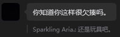

8/6
Onno！
我无疑是失落的。
前三篇已经诉说了跟这个性别保密的人类（且称它，it）的所谓爱恨情仇，最后发现我实在活在一个身前美好背后恐怖的梦境之中，所思所想也即意淫。身前是指对着手机微信，聊天欢乐沉醉。身后是门外的父母无形的巨大压力甚至暴力，就像他们当初摧毁我去别人家玩的计划一样。意淫是指我长期以来就像它屁股肉（好难玩啊）一般，没被感觉到，它咋样我都贴着，但随时一屁股就可以把我按压，而对方不知不觉，就像你们从来没在意过屁股肉被坐得多难受。我和屁股肉并无二致，没有独立思考，完完全全被牵着走，有多远走多远，无能为力。要是是两个人类的交流不可能用到意淫这个词，可是我的心理偏偏那么的扭曲。
第一次尝试先写好标题再写正文。对标15字写了这个题目。像是自我逼迫，一定要把这段意淫经历中不好的部分揪出来予以谴责。暂不知晓多少痛点会回旋镖似的再次击中我。
昨晚约11点我向几个好友发送文档，17000字我不知道要读多久，大约需要一个多小时吧。给每个人发各有顾虑，因为他们每个人知道的只是事情的若干侧面，若另有暴露，不知对我的看法会不会急转直下。凌晨陆陆续续几个人回我，至今早都收到了喜报。当事人，就是黑色头像这位，我们认识一个半月了。哦不，中间不认识了两天，但就是那两天我被小作文的开水从头烫到脚。一般这里用词都是冷水，泼冷水嘛。可是它这一番话却让我滚烫。
甚至烫伤。如果我把烫伤说成温浴，那也不能这么说对吧，反正我就提出批评。你你你，你的水浴没有使我受热均匀。实话实说我就是被烫伤了。并不是什么心被暖化。欺骗了自己。我总是不分青红皂白地接受你所说的一切。这次我更信，因为是认识你以来你首次用认真的口吻向我发送我期盼已久的小作文。那你说什么我都仔细研读并且接受。在我眼里你甚至有种难以言说的高冷。你说话很不分情况，甚至在我的自杀朋友圈下面开玩笑，我问你是不是觉得自己每次很有点子很幽默，你说对。我很讨厌你这点。我之前特别喜欢你，感觉你干什么都是轻松欢快自成一派。刚认识觉得很幽默，暗暗有趣。我现在还是戒不掉每发一条消息打一个句号，感觉有种说什么都自己绷住的趣味，可以说在意淫世界里这叫故作一本正经。什么谐音梗，还有奇怪的句式，然后有时候可调皮了句末跟个（ 。聊着聊着很嗨皮。不自觉还会笑一笑呢。但是一直这样，感觉对话的时候对方没有抓住我的重点，我都对它话读没读完产生忧虑。我对它发的每一个字，每一个片段都仔细揣摩分析，生怕我哪里又惹她烦。不好意思暴露了，这个女字旁她已经在第一顺位很久了，失误。但是我发的大段好像根本没有效果，可能对面只回应了其中一两个点。我问她为什么话不看完，她说视力不好，瞎了。我甚至特别焦虑我是不是特别烦，可是又控制不住自己要不停地输出信息。事实是我就是特别烦，我不能把这个坏的说成是好的。我总是一点点不受理睬就难过，明明我是限时的那个却倾尽所有，她好像优哉游哉，东干什么西干什么，回我的时间基本随机。也不一定是让我开心的话，甚至在我难过的时候挺风凉的。我对你的评价是，只在自己的基础上，怎么快乐怎么满足怎么来。我说我家里怎么怎么黑暗，你就说，啊？然后那个我要发动政变的图片。就发出去，然后也不提出解决方法。你就怎么开心怎么来，然后也可以带我开心，顺手抚摸这个玩具。我说的可能有些重了，我特别怕自己说重，又怕不敢说，那会形成不断的内耗。你拯救我很多次，都不是靠思维，靠判断，靠理性，终归是靠传播快乐。我再次感慨，这正如吸毒啊。可是你给的太多了。我没有注意到实际上你真正动用脑子给我发小作文之后，我被烫伤了。这一点不夸张，而我却很享受，以为是在接受洗礼。平时你说话没啥问题，挺中性尽管有时会冷一点，然而在我极致依赖的美化滤镜里，让我沉溺于无尽的自娱自乐之中。
不过这算什么问题呢，终究是我想太多了。
初中的时候记得你很爱开甜蜜的玩笑。刚加上也是。可能我太烦导致你腻了，后面变得逐渐冷淡，话从多变少。也许是我满足和快感的阈值变高了。所以你怎么说好话，我都提不起兴趣，这才觉得冰冷异常。不过你挺会制造新鲜感的，一会儿来我家下面，然后我一怎么样就说，来我家口牙。甜是甜的，可是我自己知道这在我们家是违禁的，你怎么不想到呢？我只能猜测你是故意调动兴趣，或者难以视异性去一方家中为反常。如果是我，我肯定以商量的口气，毕竟聊这么久知道对方家里人这么严格。比如，你能来我家玩吗？这种温和的语气。可是你就说，来我家口牙，这简直是在勾引我。我该不该说这是坏事呢，或者有点怪怪的。对，在我眼里你一直在调戏我。可惜没人能知道我怎么想的。说你是魅魔你还不信呢。
我的内心一定是狭隘的，容不得人家看得开又大方。
我想必是成长地憋屈的，不够激情热烈就觉得冰冷。
再说玩具的事情。
这个有很大分歧。
记录如右图所示→
